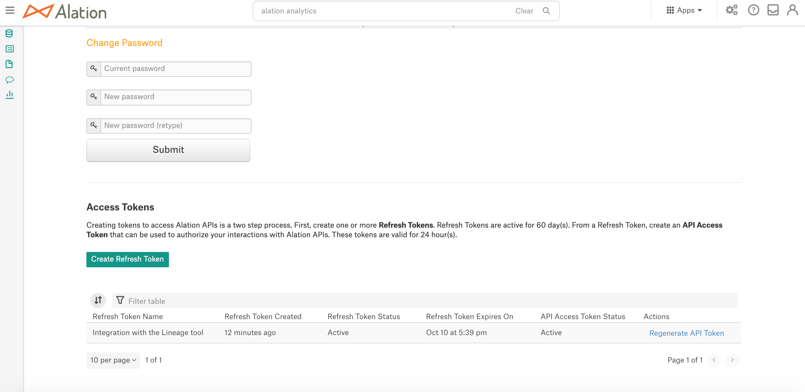

Configure the API Tokens Management Feature¶
Alation Cloud Service Applies to Alation Cloud Service instances of Alation
Customer Managed Applies to customer-managed instances of Alation
Applies from release 2020.3
There are a number of parameters in alation_conf that help administer the API Tokens Management functionality: Generate Tokens for the Alation API.
You can configure:
The expiration period for API tokens
Availability to create API Tokens via the Alation UI for all user roles
Ability to use the legacy Token API that has existed before release 2020.3
On how to use alation_conf and set parameter values, see Using alation_conf .
Note
Alation Cloud Service customers can request server configuration changes through Alation Support.
Configure the Expiration Period for API Tokens¶
Use the parameters described below to configure the expiration period for API Tokens. No restart is required after the values were changed.
Parameter |
Values |
Description |
|---|---|---|
|
Number |
Sets the lifetime for the API Access token in number of hours. Default: 24 |
|
Number |
Sets the lifetime for the API Refresh token in number of days. Default: 60 |
Hide the API Token Creation UI from Alation¶
Use the parameter alation.authentication.token.enable_v1_gui_for_all_users to disable the UI for all users except Server Admins. This parameter controls the appearance of the Access Tokens section on the Account Settings > Authentication page:

The default value is True, which means all users see the Access Token sections in Account Settings > Authentication.
Set this parameter to False to hide this section from all user roles except Server Admins. No restart is required.
Note
This parameter only hides the ability to create API tokens from the Alation UI. It does not disable the functionality of API tokens creation and usage. The functionality itself cannot be disabled as the use of APIs always requires an Access token to be passed in the request header.
If the Access Tokens section is hidden from the UI, the only means to create API tokens is the Token Management API.
Disable the pre-2020.3 Token API¶
In releases before 2020.3, API access tokens were created with the help of the GET Token API. In 2020.3, this API is still available and can be used to create API tokens. You can choose to disable the legacy GET Token API on your Alation instance to completely switch to the new Token Management API.
To disable the pre-2020.3 GET Token API, use the parameter alation.authentication.token.disable_v0_api_token_auth. By default, it is set to False, which means the tokens created with the legacy GET Token API can be used to create tokens. Set this parameter to True to completely disable the usage of the pre-2020.3 GET Token API. When this parameter is set to True (= GET Token API is disabled), then tokens created with the legacy GET Token API will not be accepted by the Alation application and API requests that include them will fail.